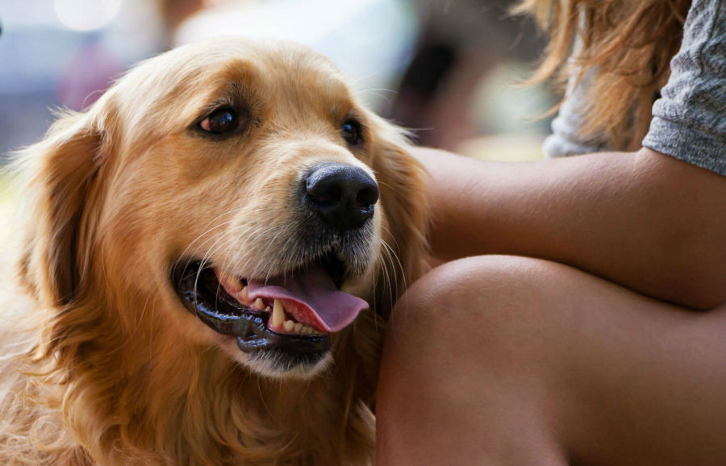

Expectativa de vida

Ter um animal de estimação significa diversão, companhia, amor, felicidade. Não à toa muitas pessoas adquirem um cachorro ou um gato. Porém, a expectativa de vida de um bichinho é muito menor que a dos humanos e encarar a partida deles é a ordem natural das coisas. Por isso, saber quantos anos vive um cachorro em média é muito importante para dar o tratamento ideal durante a vida, de acordo com a idade dele e, se possível, conseguir se preparar de alguma forma para o momento tão temido.
A resposta para a pergunta " quantos anos vive um cachorro ?" é variável. Isso porque a expectativa de vida depende de alguns fatores como porte, qualidade de vida que um animal tem e raça. Por exemplo, cães de grande porte costumam viver menos do que os de pequeno porte - o que pode ser explicado por um sobrecarga maior do organismo não preparado no momento de fazer exercícios.
A qualidade de vida oferecida ao animal pode ser determinante para a expectativa dele. Os cães que comem na quantidade certa e recebem os nutrientes necessários, de acordo com o porte, idade e quantidade de atividade física que praticam costumam apresentar uma saúde melhor. Os exercícios, são outro ponto importante: o bichinho deve gastar sua energia, caso contrário doenças como a diabates - que já afeta mais da metade dos animais domésticos - pode surgir e causar complicações na saúde.
Já o fator raça é outro que implica bastante. Muitas delas foram criadas pensando na estética, o que pode ter afetado de alguma forma o organismo do animal e o deixado mais frágil em algum sentido. O Pug é um bom exemplo disso, por causa do focinho achatado esse cachorro pode desenvolver sérios problemas de respiração, além de se engasgarem facilmente.
Selecionamos algumas das principais raças com a expectativa de vida de cada uma delas, incluindo as 10 raças mais populares do Brasil. Confira!
A lista foi colocada da maior expectativa para a menor na tentativa de ajudar com a escolha de seu pet.
Caso já tenha um pet e queira consultar sua expectativa de vida e seus aninhos restantes clique aqui.